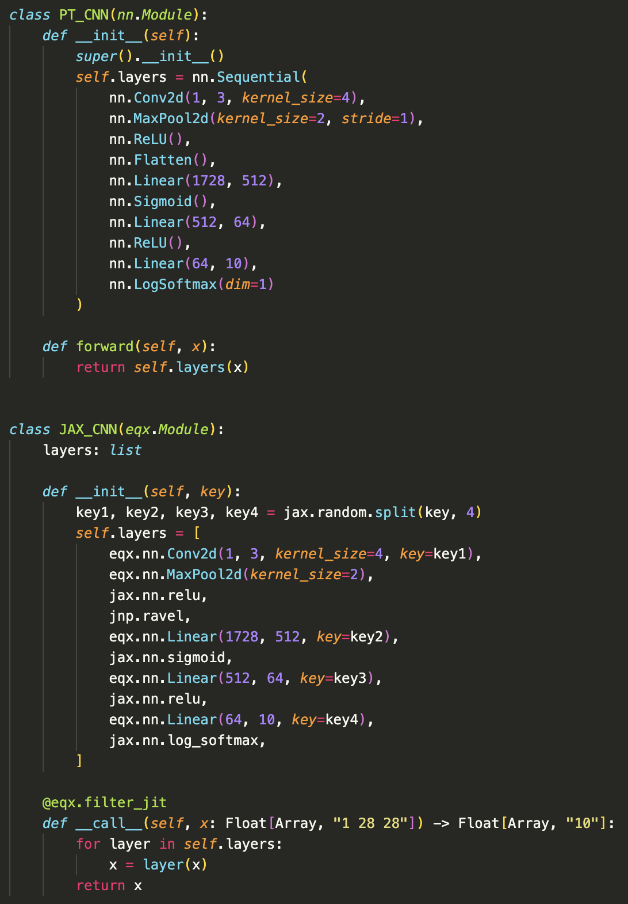
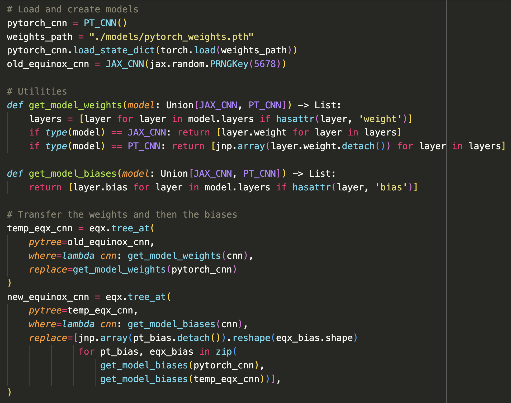

There is an ongoing war in deep learning between the PyTorch and JAX ecosystems. PyTorch is clearly winning. Deep learning feels like Groundhog Day but you're being served another "How-To" or paper in PyTorch.
This balance makes sense because PyTorch is to JAX what JavaScript is to Rust: it just works, there's a library for everything, and there's N+1 tutorials for any experiment you might be tempted to try.
But as everyone swallows their Bitter Lesson pills, the truth emerges at scale: that JAX is better than PyTorch. The reasons why are documented, so I won't address them here, but the bottom line is that if you look at the important AI labs, you'll notice that most of them use JAX (and Rust) in one form or another: xAI, Anthropic, Google DeepMind, Midjourney. I put Rust in paranthesses, because the reason companies are adopting Rust is analogous to the reasons they adopt JAX.
But why is this blog titled "Torch to JAX"? Well, I have a tendency to use my blog not just as a place for writing but as a place to refactor FAQs that I get from friends. IYKYK. This blog seeks to answer one question that frequently crops up: "Dane, I'm sold, but I need to convert this PyTorch model into JAX!" It's easy, I'll show you how.
The first principles of converting from PyTorch to JAX are:
In step 1 we define the models:
In step 2, we load our PyTorch model and convert it to JAX. In general, I feel that the Flax/Haiku ecosystem is terrible, and instead you should be using Patrick Kidger's Equinox for neural network work as it provides fantastic methods for performing model surgery:
YMMV here, and as you get to more complicated models you'll need to write custom weight transfer code. However, the only principle you need to remember is that all tunable parameters must be shared.
You can check that you've successfully ported over the weights by passing an input through both the old PyTorch and the new Equinox model and check if the outputs are identical. Barring changes in the weight precision, the outputs should be equal.
In step 3, you can save the JAX model however you see fit. For small models, this is just one file, but for larger files you'll have a few tensor shards you'll need to port. At this point, you're in JAX world. Also recall that JAX does not allocate memory until the JIT compilation happens, so you're really just swapping around pointers.
If you're new to ML engineering, a simple project would be to pick an existing module (like CLIP) that exists in HuggingFace transformers or diffusers, port it to Equinox, upload the weights, and make a PR. Do this twice and you'll learn a great deal, as well as significantly speed up performance (I notice at least a 7% speed up in inference across different backends and a 2-3x speed up for training!)
Go forth and prosper!